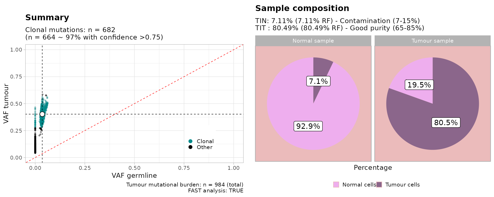

Analysis pipeline
The TINC pipelines requires to run a single function:
autofit.
Results can then be inspected using two report functions (see below).
Example simulated inputs
TIN provides a function to generate a random dataset to test the
tool. The input TIN and TIT parameters can be
specified.
Note: the sampler generates VAFs using MOBSTER, and then samples some clonal mutations and contaminates the normal. This process is noisy and might return slightly lower values for the actual
TITestimate. The best setup to test TINC is with a simulated BAM file - e.g., created via BAMSurgeon.
set.seed(1234)
# Sample data from a tumour with 80% purity, and 10% contamination in the normal
sampled_data = random_TIN(TIT = .8, TIN = 0.1)
print(sampled_data)
#> $data
#> # A tibble: 988 × 14
#> chr from to ref alt simulated_cluster n_tot_count t_tot_count
#> <chr> <int> <dbl> <chr> <chr> <chr> <int> <int>
#> 1 chr7 15495509 1.55e7 T A C1 28 115
#> 2 chr18 16405258 1.64e7 C C C1 21 123
#> 3 chr20 58511153 5.85e7 C A C1 28 126
#> 4 chr4 32252879 3.23e7 T G C1 31 118
#> 5 chr7 36969002 3.70e7 A A C1 27 112
#> 6 chr9 42019547 4.20e7 C C C1 26 102
#> 7 chr11 98947931 9.89e7 G A C1 25 142
#> 8 chr4 128058679 1.28e8 A T C1 38 117
#> 9 chr7 69696316 6.97e7 A C C1 20 144
#> 10 chr22 9425354 9.43e6 C A C1 37 121
#> # ℹ 978 more rows
#> # ℹ 6 more variables: n_alt_count <dbl>, t_alt_count <dbl>, n_ref_count <dbl>,
#> # t_ref_count <dbl>, sim_t_vaf <dbl>, sim_n_vaf <dbl>
#>
#> $cna
#> # A tibble: 988 × 6
#> chr from to ref Major minor
#> <chr> <dbl> <dbl> <chr> <dbl> <dbl>
#> 1 chr7 15495508 15495511 T 1 1
#> 2 chr18 16405257 16405260 C 1 1
#> 3 chr20 58511152 58511155 C 1 1
#> 4 chr4 32252878 32252881 T 1 1
#> 5 chr7 36969001 36969004 A 1 1
#> 6 chr9 42019546 42019549 C 1 1
#> 7 chr11 98947930 98947933 G 1 1
#> 8 chr4 128058678 128058681 A 1 1
#> 9 chr7 69696315 69696318 A 1 1
#> 10 chr22 9425353 9425356 C 1 1
#> # ℹ 978 more rows
#>
#> $plotThe sampler generates random SNVs, and plain diploid CNA segments. These segments are not real and span just through each one of the simulated SNVs.
Data mappings - done internally by TINC - are also available via the
load_TINC_input function.
load_TINC_input(x = sampled_data$data, cna = sampled_data$cna)
#>
#> ── Loading TINC input data ─────────────────────────────────────────────────────
#> ✔ Input data contains n = 988 mutations, selecting operation mode.
#> ! Found CNA data, retaining only mutations that map to segments with predominant karyotype ...
#>
#> ── CNAqc - CNA Quality Check ───────────────────────────────────────────────────
#> ℹ Using reference genome coordinates for: GRCh38.
#> ✔ Fortified calls for 988 somatic mutations: 988 SNVs (100%) and 0 indels.
#> ! CNAs have no CCF, assuming clonal CNAs (CCF = 1).
#> ! Added segments length (in basepairs) to CNA segments.
#> ✔ Fortified CNAs for 988 segments: 988 clonal and 0 subclonal.
#> Warning in map_mutations_to_clonal_segments(mutations, cna_clonal): [CNAqc] a
#> karyotype column is present in CNA calls, and will be overwritten
#> ✔ 988 mutations mapped to clonal CNAs.
#>
#> ── Genome coverage by karyotype, in basepairs. ──
#>
#> # A tibble: 1 × 4
#> minor Major n karyotype
#> <dbl> <dbl> <dbl> <chr>
#> 1 1 1 2964 1:1
#> ✔ n = 988 mutations mapped to CNA segments with karyotype 1:1 (largest available in basepairs).
#> ✔ Mutation with VAF within 0 and 0.7 ~ n = 988.
#> $mutations
#> # A tibble: 988 × 12
#> chr from to ref alt n_ref_count n_alt_count t_ref_count
#> <chr> <int> <dbl> <chr> <chr> <dbl> <dbl> <dbl>
#> 1 chr7 15495509 15495510 T A 27 1 63
#> 2 chr18 16405258 16405259 C C 20 1 69
#> 3 chr20 58511153 58511154 C A 27 1 80
#> 4 chr4 32252879 32252880 T G 30 1 69
#> 5 chr7 36969002 36969003 A A 26 1 66
#> 6 chr9 42019547 42019548 C C 25 1 60
#> 7 chr11 98947931 98947932 G A 24 1 84
#> 8 chr4 128058679 128058680 A T 37 1 74
#> 9 chr7 69696316 69696317 A C 19 1 84
#> 10 chr22 9425354 9425355 C A 36 1 81
#> # ℹ 978 more rows
#> # ℹ 4 more variables: t_alt_count <dbl>, karyotype <chr>, id <chr>,
#> # OK_tumour <lgl>
#>
#> $cna_map
#> ── [ CNAqc ] MySample 988 mutations in 988 segments (988 clonal, 0 subclonal). G
#>
#> ── Clonal CNAs
#>
#> 1:1 [n = 988, L = 0 Mb] ■■■■■■■■■■■■■■■■■■■■■■■■■■■
#> ℹ Sample Purity: 80% ~ Ploidy: 2.
#>
#> $what_we_used
#> [1] "1:1"TINC fits the data via the autofit function.
A flag FAST sets faster set of parameters to determine
TIN and TIT scores - we usually this for prototyping analyses and then
turn it to FALSE.
# Autofit function
TINC_fit = autofit(sampled_data$data, cna = NULL, FAST = TRUE)
#> [ TINC ]
#>
#>
#> ── Loading TINC input data ─────────────────────────────────────────────────────
#> ✔ Input data contains n = 988 mutations, selecting operation mode.
#> ✔ Mutation with VAF within 0 and 0.7 ~ n = 988.
#>
#> ── Analysing tumour sample with MOBSTER ────────────────────────────────────────
#>
#> [ MOBSTER fit ]
#>
#> ✔ Loaded input data, n = 988.
#> ❯ n = 988. Mixture with k = 1,2 Beta(s). Pareto tail: TRUE and FALSE. Output
#> clusters with π > 0.02 and n > 10.
#> ! mobster automatic setup FAST for the analysis.
#> ❯ Scoring (without parallel) 2 x 2 x 2 = 8 models by reICL.
#> ℹ MOBSTER fits completed in 5.4s.
#> ── [ MOBSTER ] My MOBSTER model n = 988 with k = 1 Beta(s) and a tail ──────────
#> ● Clusters: π = 65% [C1] and 35% [Tail], with π > 0.
#> ● Tail [n = 320, 35%] with alpha = 1.2.
#> ● Beta C1 [n = 668, 65%] with mean = 0.4.
#> ℹ Score(s): NLL = -914.41; ICL = -1685.93 (-1787.44), H = 101.51 (0). Fit
#> converged by MM in 15 steps.
#> ℹ Using the location likelihood heuristic to inspect mutations' distribution
#> ✔ Cluster C1: 60% of counts in 12 chromosomes (spread over >20% of used chromosomes: 4.4).
#> ℹ Without CNA, TINC will estimate tumour purity as 2*x, with x the clonal peak.
#> ✔ MOBSTER found n = 655 clonal mutations from cluster C1
#>
#> ── Analysing normal sample with BMix ───────────────────────────────────────────
#>
#> ── BMix fit ────────────────────────────────────────────────────────────────────
#> ℹ Binomials k_B = 1 and 2, Beta-Binomials k_BB = 0; 4 fits to run.
#> ℹ Bmix best fit completed in 0 mins
#> ── [ BMix ] My BMix model n = 655 with k = 1 component(s) (1 + 0) ──────────────
#> • Clusters: π = 100% [Bin 1], with π > 0.
#> • Binomial Bin 1 with mean = 0.0344723008491711.
#> ℹ Score (model selection): ICL = 1387.51.
#> Scale for x is already present.
#> Adding another scale for x, which will replace the existing scale.
#> Scale for fill is already present.
#> Adding another scale for fill, which will replace the existing scale.
#> ✔ Binomial peaks 0.0344723008491711 with proportions 1. Clonal score 0.0344723008491711 with TINN 0.0689446016983421
#>
#>
#>
#> ── Analysing tumour and normal samples with VIBER ──────────────────────────────
#>
#> [ VIBER - variational fit ]
#>
#> ℹ Input n = 988, with k < 5. Dirichlet concentration α = 1e-06.
#> ℹ Beta (a_0, b_0) = (1, 1); q_i = prior. Optimise: ε = 1e-06 or 1000 steps, r = 3 starts.
#> [easypar] 2024-04-22 10:06:45.728559 - Overriding parallel execution setup [TRUE] with global option : FALSE
#> ✔ VIBER fit completed in 0.01 mins (status: converged)
#> ── [ VIBER ] My VIBER model n = 988 (w = 2 dimensions). Fit with k = 5 clusters.
#> • Clusters: π = 68% [C3], 27% [C2], and 5% [C4], with π > 0.
#> • Binomials: θ = <0.03, 0.4> [C3], <0, 0.08> [C2], and <0, 0.19> [C4].
#> ℹ Score(s): ELBO = -136592.736. Fit converged in 41 steps, ε = 1e-06.
#> ✔ Reduced to k = 3 (from 5) selecting VIBER cluster(s) with π > 0.02, and Binomial p > 0 in w > 0 dimension(s).Summary of the results (with an S3 object)
print(TINC_fit)
#>
#> ── TINC profiler for bulk WGS ──────────────────────────────────────────────────
#> ! Copy Number data has not been used for this analysis.
#> → Mutations data: n = 988 out of 988 within range (100%).
#>
#> TIT : 80% (RF 80) ~ n = 655 clonal mutations, cluster C1
#> TIN : 7% (RF 7) ~ n = 623 with VAF > 0
#>
#> QC Tumour Good purity (65-85%)
#> QC Normal Some contamination (3-7%)Plot the results (with an S3 object).
plot(TINC_fit)
# Analogous to
# plot_simple_report(TINC_fit)Or make a more detailed report
plot_full_page_report(TINC_fit)
A similar fit object is available inside the package (called
fit_example).